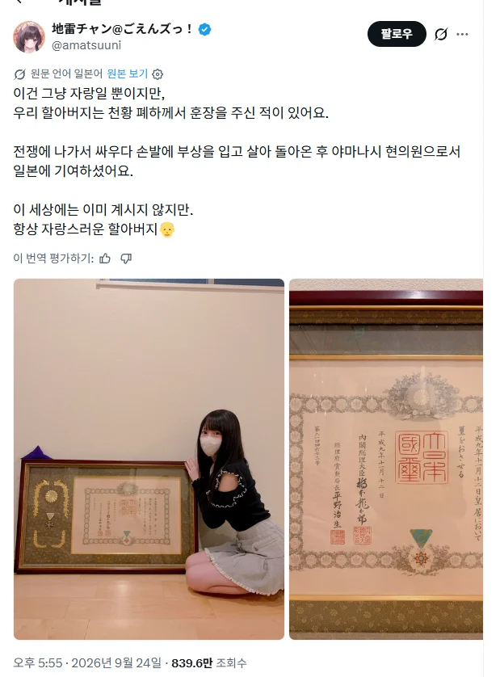
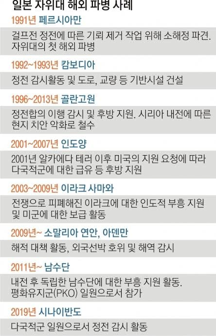

일단 전쟁 나가서 다친공로로 할아버지가 천황한테 훈장받은 걸 자랑하는 글임.
일단 우편의 훈장 수여일 및 수여자를 보면
가. 수여일: 1997년(헤이세이 9년)
나. 수여자: 하시모토 류타로(재임: 1996~1998)
이므로 2차 세계대전이 아니라 딴 것때매 수여된 것임을 알 수 있음.
그럼 뭔 사유일까?

https://m.seoul.co.kr/news/international/insight-global/2019/12/31/20191231009003
자위대 해외파견(평화유지군) 공로로 볼 수 있음.
진짜 전쟁을 모르는 여자애와, 짤을 주의깊게 보지 않는 트위터리안들과의 콜라보로 억지 욕을 먹는다 보임.
질투에 미친 표독 한녀들만의 문제입니다 한국남자들은 피해자에요